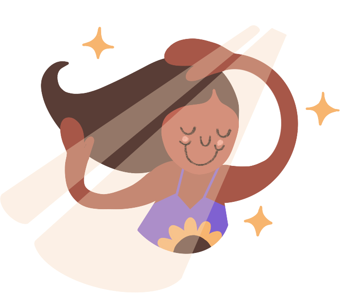
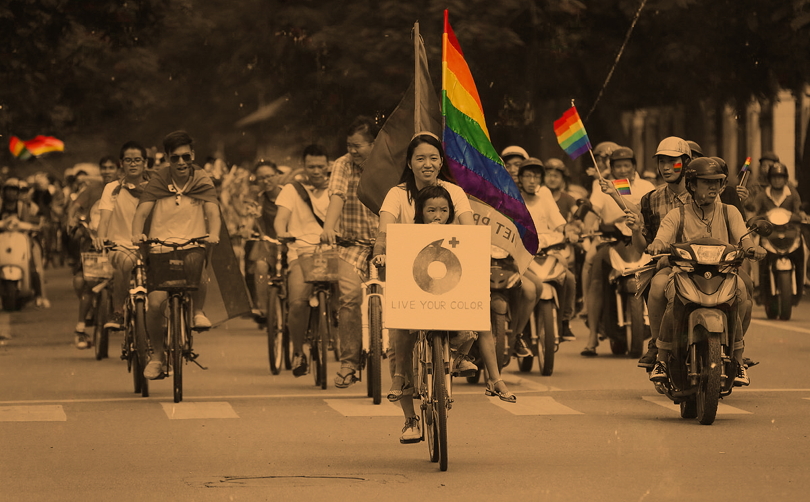
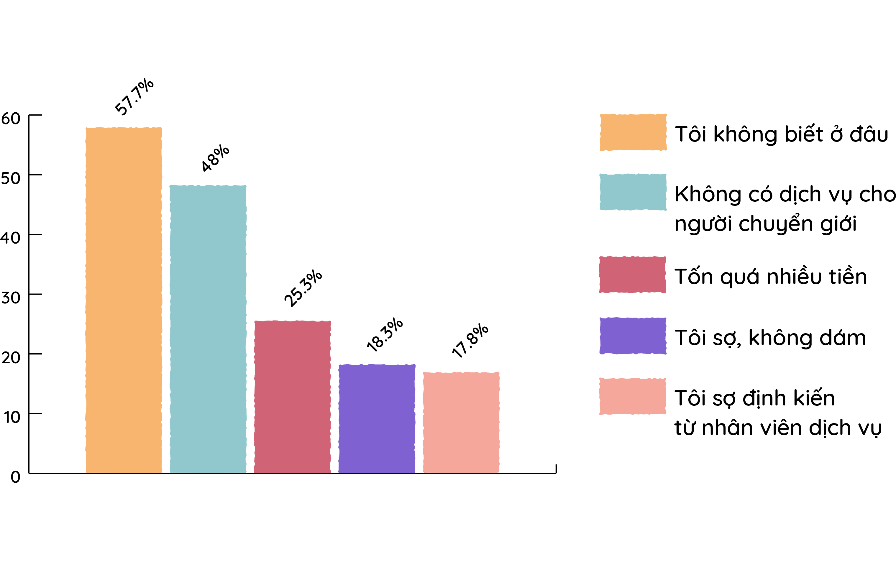
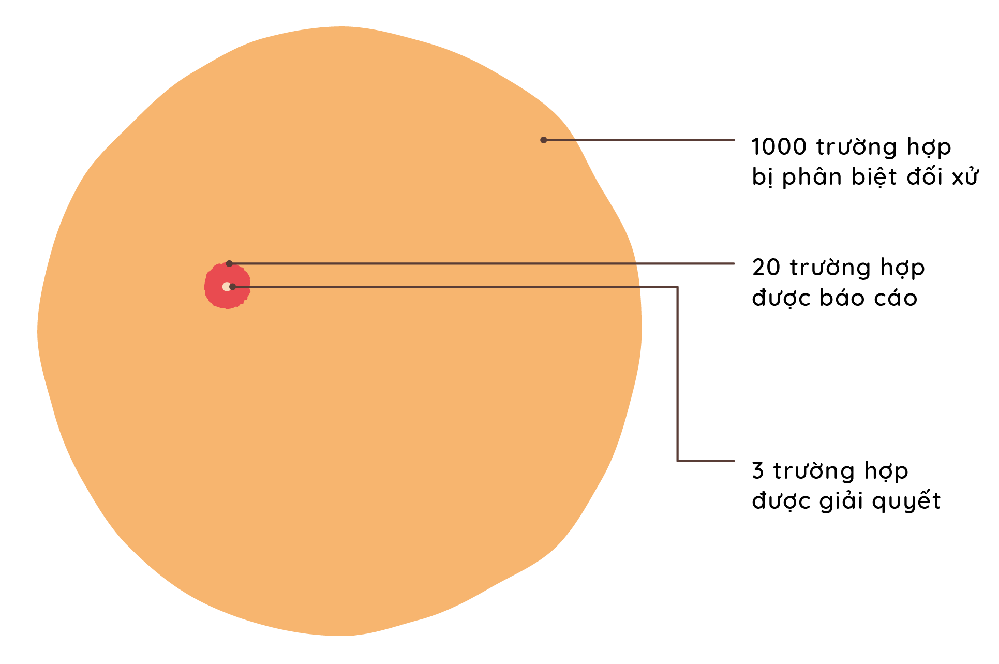

Cộng Đồng
Chương 03
Trong vài năm gần đây, xã hội dần dần nhận ra quyền bình đẳng của cộng đồng LGBTQ không chỉ là một đòi hỏi, mà đây chính là quyền con người cơ bản. Nhưng vì đây là một xã hội đang phát triển, dĩ nhiên sẽ có người ủng hộ, và cũng sẽ có người kỳ thị. Chương 03 sẽ cho người đọc một cái nhìn vào cuộc sống và cộng đồng của người LGBTQ. Đồng thời, chương 03 sẽ cung cấp những thông tin, số liệu thống kê, và tài liệu về cộng đồng LGBTQ tại Việt Nam.
Mục Lục
Click để đi đến chủ đề
Tình Yêu
Mối Quan Hệ
Relationships
Một quan niệm phổ biến thường thấy ở Việt Nam là nhiều người nghĩ không có tình yêu thực sự trong cộng đồng LBGTQ. Không như những cặp đôi dị tính, những cặp đôi đồng giới không có sự "ràng buột" như hôn nhân, con cái để níu giữ lại tình cảm giữa hai người. Vì không có những sự ràng buột, nhiều người LBGTQ không thể yêu hết mình vì sợ đối phương một ngày nào đó sẽ bỏ đi. Nhưng khi yêu mà chỉ có suy nghĩ đến lúc chia tay thì đương nhiên mối quan hệ đó sẽ không bền lâu. Nếu muốn có tình cảm chân thật từ người khác thì mình hãy nên chân thật từ lúc ban đầu. Sinh ra là để yêu, vì thế hãy yêu hết mình!
Vì định kiến xã hội và gia đình quá nhiều, khi hai người đồng giới yêu nhau không thể giành thời gian yêu nhau, mà phải giành thời gian che giấu. Mỗi người chỉ sống được một lần, hãy nên sống cho bản thân. Nếu tình yêu đó đủ lớn, thì cả hai người đều có thể vượt qua được. Đó là một thử thách của tất cả các mối quan hệ tình cảm, không chỉ riêng của người LGBTQ. Nếu mối quan hệ đó không vượt qua được, thì hãy coi đó như là một kinh nghiệm. Vui vẽ mà sống để còn tìm cho mình một tình yêu khác. Hãy cho bản thân những cơ hội mới, gặp gỡ những con người mới, những người xứng đáng nhận hạnh phúc của bạn.
"Nếu bạn không thể yêu chính mình, làm thế quái nào bạn sẽ yêu người khác?"
— RuPaul
Tình yêu đến khó nhất với những người chuyển giới. Do áp lực xã hội để có gia đình, những người dị tính thường không muốn quen người chuyển giới lâu dài. Đôi khi, những người chuyển giới phải hy sinh rất nhiều vì tình yêu: phải chấp nhận người yêu quen người dị tính cùng lúc, lúc nào cũng bị thiệt thòi trong những mối quan hệ. Nhưng hãy nhớ, bạn phải yêu chính mình trước khi bạn có thể yêu người khác. Mình phải biết giá trị của bản thân thì mới cho người ta thấy giá trị của mình thế nào.
Đồng Minh
Ally
Ally, tiếng Việt tạm dịch là “đồng minh”, là từ dành cho những người muốn ủng hộ sự bình đẳng cho cộng đồng LGBTQ. Theo thông thường, mọi người nghĩ ally chỉ dành cho những người dị tính muốn ủng hộ cộng đồng LGBTQ. Tuy nhiên, ally cũng có thể dùng cho những người trong cộng đồng LGBTQ ủng hộ lẫn nhau (ví dụ: bạn có thể là gay và vẫn có thể là ally cho những người chuyển giới). Như Dr. Martin Luther King, Jr đã nói, “Sự bất công ở bất cứ đâu là mối đe dọa cho công lý ở khắp mọi nơi." Mọi người đều hưởng lợi ích từ sự ủng hộ lẫn nhau, vì đó là nổ lực chung để tạo ra một xã hội hiểu biết và bỉnh đẳng. Đây là những hành động đơn giản có thể giúp bạn làm một ally:
Hiểu biết hơn về cộng đồng LGBTQ
Cách đơn giản nhất để làm một ally là hiểu biết hơn về cộng đồng LGBTQ. Vì người dị tính không bị kỳ thị trong xã hội, họ nên dùng tiếng nói để bảo vệ cho những người thuộc nhóm LGBTQ. Khi bạn là người dị tính, bạn sẽ không thể hiểu được trải nghiệm của một người LBGTQ. Vì thế, hãy tìm hiểu hơn những thông tin, câu chuyện, và luật pháp về họ. Khi bạn hiểu và cảm thông cho cộng đồng LBGTQ, hành động và lời nói của bạn sẽ có hiệu lực lớn hơn.
Sử dụng cách xưng hô đúng cách
Điều này đặc biệt quan trọng cho những người chuyển giới, liên giới tính, và phi giới tính. Đa số người chuyển giới muốn mình được nhìn nhận và xưng hô theo giới tính họ mong muốn. Ví dụ một người nam chuyển giới thành một người phụ nữ, người ấy sẽ muốn được xưng hô bằng "chị" hoặc "cô ta". Nếu bạn không biết cách xưng hô như thế nào, cách đơn giản nhất là hãy hỏi họ muốn được gọi bằng gì. Điều này có thể hơi khó khăn khi chưa quen, đặc biệt nếu bạn đã biết người đó từ lâu - nhưng hành động này thật sự rất quan trọng vì khi bạn gọi họ bằng cách xưng hô họ móng muốn, bạn đang khẳng định rằng bạn đón nhận và ủng hộ danh tính của họ.
Khuyến khích sự ủng hộ
Tham gia sự kiện, ủng hộ luật pháp bảo vệ, tham dự Pride Parade là một trong những điều bạn có thể làm để khuyến khích sự ủng hộ cho cộng đồng LBGTQ. Khi bạn nghe ai lan truyền những thông tin tiêu cực hoặc không chính xác về cộng đồng LGBTQ, hãy sử dụng điều này như một cơ hội để cung cấp cho họ những hiểu biết chính xác hơn. Đặc biệt nếu bạn là người dị tính, sự ủng hộ của bạn sẽ là một đóng góp lớn nhằm tuyên truyền quyền bình đẳng cho người LBGTQ.
Kỳ Thị
"Không ai sinh ra đã biết ghét bỏ người khác… Họ phải học cách ghét, và nếu họ có thể học cách ghét, họ có thế học yêu thương, vì tình yêu đến với trái tim con người một cách tự nhiên hơn là thù hận.”
— Nelson Mandela
Môi Trường
Environment
Giáo Dục
Ngoài gia đình, trường học là nơi những người dưới 18 tuổi dành nhiều thời gian nhất để phát triển bản thân và các môi quan hệ. Thế nhưng, học sinh LGBTQ thường phải chiệu nhiều bạo lực và định kiến trong môi trường học đường. Có rất nhiều học sinh LGBTQ bị bắt nạt và phân biệt đối xử ngày qua ngày. Hơn thế nữa, vì không có luật nào bảo vệ học sinh khỏi bạo lực học đường và phân biệt đối xử, nhiều học sinh và sinh viên phải bỏ học vì môi trường học tập thiếu an toàn.
Vì chương trình giáo dục Việt Nam bị kiểm xoát bởi nhà nước, kể cả cho các trường tư thục, giáo dục giới tính không được đưa vào chương trình giảng dạy chính quy. Bên cạnh đó, vẫn còn thiếu sự hợp tác giữa nhà trường, phụ quynh, và học sinh nhằm đấu tranh chống lại phân biệt đối xử học đường. Từ thầy cô tới cơ sở y tế, học sinh LGBTQ không có nơi nào để tìm kiếm sự hỗ trợ khi bị hành hùng tại trường. Vì thế, mọi người cần nên thúc đẩy giáo dục giới tính vào chương trình dạy chính, cũng như đào tạo các nhà giáo dục về sự đa dạng tính dục. Cả giáo viên và học sinh cần được dạy tôn trọng sự đa dạng giới tính và loại bỏ sự phân biệt đối xử. Giáo dục là nên tảng quan trọng cho sự phát triển của mọi trẻ em, và học sinh LGBTQ cần có một môi trường học tập an toàn và thân thiện như tất cả các học sinh khác.
Y Tế
Mặc dù nhà nước đã thừa nhận quyền chuyển giới từ năm 2015, phẫu thuật chuyển đổi giới tính vẫn chưa được hợp pháp hoạ tại Việt Nam. Hiện tại, Việt Nam có đủ cơ sở vật chất và chuyên môn kỹ thuật để gặp tất cả các yêu cầu liên quan đến chuyển giới: tạo hình ngực, tạo hình cơ quan sinh dục, nữ hoá gương mặt, giọng nói, etc. Thế nhưng, luật pháp Việt Nam chưa cho phép những ca phẩu thuật này. Nhiều người chuyển giới phải đi tới Thái Lan để nhận được những ca phẩu thuật này, một giải pháp vừa tôn kém vừa nguy hiểm. Họ phải tiết kiệm đủ tiền để có những ca phẩu thuật tại nước ngoài, và sau đó phải quay lại Việt Nam ngay lập tức vì họ không đủ chi phí để ở lại bệnh viện khá lâu. Do đó, sự thiếu phục hồi và giám sát của bác sĩ là những lý do thường thấy ở các cuộc phẩu thuật bất thành cho người chuyển giới Việt Nam.
Nghiên cứu của viện iSEE cho thấy hai lý do lớn nhất mà người chuyển giới không tìm đến dịch vụ y tế là vì họ không biết ở đâu và những cơ sở y tế không có dịch vụ dành cho người chuyển giới. Lý do tiếp theo là vừa sợ cho bản thân, vừa sợ định kiến từ nhân viên dịch vụ. Thật sự rất bất công khi phải đưa bản thân vào tình thế nguy hiểm để tránh sự tò mò và hiếu kì từ những người làm trong y tế. Các cơ quan ý tế cần phải hành động để cải thiện sự an toàn cho người chuyển giới nói riêng và LGBTQ nói chung. Kiến thức đúng và thái độ cởi mở là những điều cần thiết để tạo nên sự thân thiện với người LBGTQ trong quá trình tư vấn, khám và điều trị. Đồng thời, các cơ quan y tế cần đưa ra những tài liệu hướng dẫn chăm sóc y tế(uống thuốc, tiêm hormones, và phẩu thuật) cho người chuyển giới.
Câu hỏi: Bạn có bao giờ tìm đến sự hỗ trợ tâm lý, y tế dành cho người chuyển giới chưa? Nếu chưa, tại sao?
Lao Động
Người chuyển giới là những người chiệu thiệt thòi nhiều nhất trong môi trường lao động. Các nhà tuyển dụng lao động rất thường hay từ chối nhận việc người chuyển giới vì biểu hiện giới tính sinh học của họ được hiện rõ nét bên ngoài. Cả trong những trường hợp người chuyển giới có hình dạng giống như giới tính của họ mong muốn, những nhà tuyển dụng vẫn làm khó dễ khi tên hoặc giới tính của họ không trùng khớp như trên giấy tờ. Tại Việt Nam, một trong hai người chuyển giới đi xin việc sẽ bị từ chối mặc dù đủ điều kiện. Một số người phải chấp nhận che giấu xu hướng tính dục và giới tính của bản thân để mong tìm được công việc. Cả khi nhận được việc, áp lực tâm lý khi phải che giấu xu hướng tính dục và giới tính làm ảnh hưởng đến năng suất lao động của họ. Hiện tại, Luật Lao Động chưa có luật nào ngăn chặn phân biệt đối xử dựa trên xu hướng tính dục và giới tính. Vì thế, mọi người cần kêu gọi nhà nước đưa ra các luật pháp nhằm bảo vệ người LGBTQ để họ được một môi trường làm việc an toàn.
Luật Bảo Vệ
Protection Laws
Việt Nam hiện không có luật pháp bảo vệ người đồng tính khỏi kỳ thị. Một người LGBTQ có thể bị đuổi việc, từ chối công việc, từ chối cho thuê nhà bởi giới tính hoặc xu hướng tính dục của họ bức cứ lúc nào. Hơn thế nữa, những bạo lực tình dục với người LBGTQ cũng chưa được luật pháp đối phó. Việt Nam chỉ xác nhận bạo lực tình dục khi có hoạt động giao cấu giữa nam và nữ. Vì thế, người chuyển giới nam sang nữ không có đủ cơ sở pháp lý để tố cáo người tấn công mình vì trên giấy tờ, họ vẫn mang giới tính nam.
Trong một nghiên cứu của viện iSEE cho thấy chỉ có 2% người khảo sát báo công an hoặc chính quyền địa phương khi bị phân biệt đối xử. Một trong số lý đo những lý do lớn nhất khi hỏi tại sao không trình báo là vì người bị kỳ thị nghĩ rằng sự việc khá nhỏ (63.7%), không tin sự việc được giải quyết (46.7%), không muốn tiết lộ về bản thân (26.3%), và lo sợ phản ứng từ phía công an (17.7%). Trong số 2% người đi trình báo, chỉ có 14.3% trường hợp được giải quyết hoàn toàn. Điều này cho thấy luật pháp bảo vệ phân biệt đối xử tại Việt Nam chưa thật sự dễ dàng tiếp cận và sử dụng hiệu quả.
Vì thế, mọi người nên khuyến khích xây dựng một môi trường chính trị tốt hơn cho người LGBTQ. Nhân quyền của người LGBTQ cần được nhà nước công nhận như những người khác, các cặp đôi đồng giới được những quyền lợi chính đáng (kết hôn, nhận con nuôi, etc.), và cần cho ra những pháp luật để bảo vệ người LGBTQ khỏi sự kỳ thị dựa trên giới tính/xu hướng tính dục.
Thông Tin
Infographic (đồ hoạ thông tin) về cộng đồng LGBTQ tại Việt Nam
Lịch Sử
Timeline
Phân Biệt Đối Xử
Discrimination
Câu hỏi: Khi tiếp xúc với các thành viên trong gia đình, bạn đã bao giờ trải qua những tình huống sau bởi vì được coi là người LGBTQ?
* Nhóm chuyển giới có tỷ lệ trải nghiệm phân biệt đối xử cao hơn ở tất cả các hành vi so với nhóm đồng tính và song tính.
Công Khai
Coming out
Tỷ lệ người tham gia khảo sát đã công khai với gia đình, hàng xóm, bạn bè, đồng nghiệp
Câu hỏi: Có bao nhiêu người mà bạn đã công khai với họ bạn là người LGBTQ?
Quyền LGBTQ
LGBTQ Rights
Hiện tại, Việt Nam không có luật bảo vệ người đồng tính/
chuyển giới khỏi:
Cộng Đồng
Cộng đồng LBGTQ tại Việt Nam: